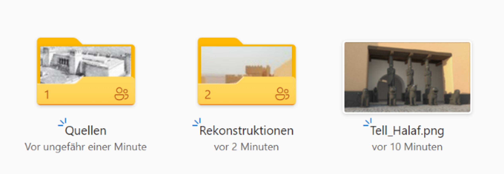

Mit der Dokumentations-Anwendung IDOVIR kann man sich bestehende,
dokumentierte Projekte anschauen und neue dokumentieren.
Dieser Nutzertest dient dazu, diese Funktonen zu testen.
Sie sollen ein bestehendes Projekt ansehen und ein neues anlegen.
Für den ganze Eingabe haben wir ca. 14 Minuten veranschlagt.
Mit der Bedienung der Schaltfläche "Weiter" kommen Sie zur nächsten Aufgabe.
Zum Schluss folgt eine Nutzerumfrage, die ungefähr 15 Minuten. dauern wird.
Anleitung zur Ausführung der Aufgaben:
Unter dem Link
kommen Sie zum Cloud-Ordner, wo alle Bilder abgelegt sind,
die Sie für die folgenden Aufgaben brauchen werden (siehe Abbildung unten).
Bitte laden Sie diesen Ordner lokal auf Ihren Rechner runter,
um später damit arbeiten zu können.
Sobald Sie die Aufgaben beendet haben,
löschen Sie bitte die runtergeladenen Dateien von Ihrer Festplatte.
Die Weiterverwendung der Bilder ist strengstens untersagt.

Aufgabe 1: Erstes Kennenlernen
Schritt 1: Schauen Sie sich ein beliebiges Projekt auf der Seite
IDOVIR an,
um die Struktur des Systems etwas kennenzulernen.
Schritt 2: Jetzt öffnen Sie im neuen Tab die Seite IDOVIR-Staging.
Loggen Sie sich mit den Nutzerdaten, die Ihnen auf dem Zettel mitgeteilt wurden.
7%
Aufgabe 2: Ein ähnliches Projekt anlegen
Die Inhalte, mit denen Sie das neue Projekt befüllen,
stellen wir Ihnen hier als Text (für Copy und Paste)
bereit und die Bilder finden Sie im Ordner,
den Sie runtergeladen hatten
14%
Aufgabe 2: Ein ähnliches Projekt anlegen
Schritt 1: Gehen Sie zur Projektübersicht und legen Sie ein neues Projekt an:
Projekttitel: Tell Halaf
Primäre Sprache: Deutsch
Sekundäre Sprache: Englisch
21%
Aufgabe 2: Ein ähnliches Projekt anlegen
Schritt 2: Laden Sie mich (Elze) zum Projekt als Mitwirkende ein.
Dafür geben Sie die folgenden Daten an:
E-Mail: elze.tomasiunaite@stud.htw-dresden.de
Rolle: Ansprechpartner
Institution: HTW Dresden
Berechtigung: Admin
28%
Aufgabe 2: Ein ähnliches Projekt anlegen
Schritt 3: Fügen Sie ein paar Informationen zum Objekt Tell Halaf hinzu:
Laden Sie das Vorschau-Bild Tell_Halaf hoch
(das Bild finden Sie unter dem Namen Tell_Halaf in dem Cloud-Ordner)
Fügen Sie die Geokoordinaten ein (Namen im Suchfeld eingeben)
Fügen Sie die folgende Projektbeschreibung hinzu – (per Copy und Paste einfügen):
Virtuelle Rekonstruktion des aramäischen Westpalastes
und des assyrischen Nordostpalast von Tell Halaf im heutigen Syrien.
35%
Aufgabe 2: Ein ähnliches Projekt anlegen
Schritt 4: Legen Sie die folgende Gliederung in der Projektstruktur an,
die eine Unterteilung des Tell Halafs in kleinere Segmente darstellen soll
(Sie werden nur einen Bruchteil von Tell Halaf anlegen).
Die folgenden Strukturelemente sollten rein
(Einrückungen deuten auf hierarchische Zugehörigkeit):
Außen
Mauern Oberer Abschluss
Türme
Innen
42%
Aufgabe 2: Ein ähnliches Projekt anlegen
Schritt 5: Zum Schluss befüllen Sie die Bilderdatenbanken Quellenübersicht
und Rekonstruktionen im IDOVIR mit Bildern von Quellen und Rekonstruktionen,
die sie später brauchen werden.
Die Bilder finden Sie in den jeweiligen Unterordnern im von Ihnen runtergeladenen Cloud-Ordner.
49%
Aufgabe 3: Strukturelemente mit Inhalten befüllen
Schritt 1: Gehen Sie zum Element Mauern Oberer Abschluss.
Benennen Sie die aktuelle Variante in der Sie sich befinden mit dem Namen Hoch.
56%
Aufgabe 3: Strukturelemente mit Inhalten befüllen
Schritt 2: Laden sie folgende Bilder an entsprechenden Positionen hoch
(wählen Sie die Bilder aus, die Sie in Punkt 2. hochgeladen haben):
Rekonstruktion: R Mauer Oberer Abschluss HOCH
Quelle: Q Mauern Oberer Abschluss
63%
Aufgabe 3: Strukturelemente mit Inhalten befüllen
Schritt 3: Fügen Sie den folgenden Argumentationstext ein:
Reliefs und Wandmalereien zeigen bei Zinnen teils einfache Abtreppungen
(zwei Steigungen, ein Zwischenabsatz), oft aber auch zweifache,
die Zinnensteine des Postaments vor dem West-Palast sogar dreifache.
70%
Aufgabe 3: Strukturelemente mit Inhalten befüllen
Schritt 4: Erstellen Sie in dem gleichen Strukturelement (Mauern Oberer Abschluss)
eine weitere Variante und benennen Sie sie mit dem Namen Niedrig
und laden sie nur das Bild R Mauer Oberer Abschluss NIEDRIG zu den Rekonstruktionen hoch.
77%
Aufgabe 3: Strukturelemente mit Inhalten befüllen
Schritt 5: Zum Schluss teilen Sie mit mir diese zweite Variante,
die sie erstellt haben, über eine in IDOVIR vorhandene Teilen-Funktion (Zeitraum eingeben: 1 Tag):
Mein Name: Elze
E-Mail: elze.tomasiunaite@stud.htw-dresden.de
84%
Aufgabe 4: Zum Schluss kommentieren Sie noch Ihr erstes Projekt
Dafür gehen Sie auf einen beliebigen Gliederungspunkt
und fügen einen beliebigen Kommentar für mich ein 😊
91%
Sie haben die Aufgaben geschafft!
Jetzt bitte ich Sie, den wichtigsten Teil dieser Übung zu erfüllen:
Geben Sie Ihre Bewertung zur Nutzung von IDOVIR in der Umfrage
zu der Benutzeroberfläche von IDOVIR ab. Dafür gehen Sie bitte auf
Link zur Umfrage
und beantworten Sie die Fragen.